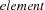
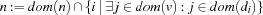
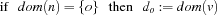
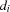
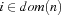
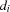
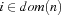
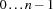
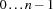

1.5 Using Vectors in Propagators
This section explains how propagators with vectors as parameters can be implemented by the CPI .
1.5.1 The element Constraint
The previous section explained techniques of how to handle propagator parameters which are vectors. This section implements the constraint ![element(n, [d_1,\ldots,d_m], v)](latex40.png) , whose declarative semantics is defined by
, whose declarative semantics is defined by  .
.
All parameters of the  propagator are allowed to be finite domain variables resp. a vector of finite domain variables. We have the following propagation rules, which determine the operational semantics of the propagator for the constraint .
Rule 1: 
Rule 2: 
Rule 3: 
Note that  denotes the current domain of
denotes the current domain of  and
and  denotes the update of with
denotes the update of with  .
.
The first rule states that the domain of  can only contain values
can only contain values  such that
such that  and
and  share at least one value. The propagation rule (Rule 2) states that the domain of
share at least one value. The propagation rule (Rule 2) states that the domain of  cannot contain any value which does not occur in at least one  indexed by the values of the domain of , i. e. . The third rule says that as soon as is a singleton containing
cannot contain any value which does not occur in at least one  indexed by the values of the domain of , i. e. . The third rule says that as soon as is a singleton containing  , the th element of is equal to . The implementation of these rules is given in Section 1.5.5.
, the th element of is equal to . The implementation of these rules is given in Section 1.5.5.
1.5.2 The Class Definition of ElementProp
The state of an instance of the class ElementProp contains a pointer to an array of OZ_Terms, namely _d. This is necessary, since it is not known beforehand how many elements are contained in the vector . The size of the vector is stored in _d_size. Using a dynamic array in the state has some significant implications to the implementation of the member functions. The first function concerned is the constructor which has to allocate sufficient heap memory for the vector. The CPI provides the function OZ_vectorSize(), which computes the size of a vector passed as OZ_Term. This size is used to allocate an appropriately sized chunk of memory using the CPI function OZ_hallocOzTerms(). Finally, the vector as Oz data structure has to be converted to a C/C++ array. For convenience, the CPI provides the function OZ_getOzTermVector() which does this conversion. The following code gives the class definition described so far.
class ElementProp : public OZ_Propagator {
private:
static OZ_PropagatorProfile profile;
OZ_Term _n, _v, * _d;
int _d_size;
public:
ElementProp(OZ_Term n, OZ_Term d, OZ_Term v)
: _n(n), _v(v), _d_size (OZ_vectorSize(d))
{
_d = OZ_hallocOzTerms(_d_size);
OZ_getOzTermVector(d, _d);
}
virtual OZ_Return propagate(void);
virtual size_t sizeOf(void) {
return sizeof(ElementProp);
}
virtual OZ_PropagatorProfile *getProfile(void) const {
return &profile;
}
virtual OZ_Term getParameters(void) const;
virtual void gCollect(void);
virtual void sClone(void);
};
OZ_PropagatorProfile ElementProp::profile;
The function getParameters() returns the arguments of the propagator in a list. Thereby, the vector is represented in a sublist. The local C/C++ variable list is used to build up the list from the end of the vector. Therefore it is initialised as empty list and extended element-wise.
OZ_Term ElementProp::getParameters(void) const {
OZ_Term list = OZ_nil();
for (int i = _d_size; i--; )
list = OZ_cons(_d[i], list);
return OZ_cons(_n,
OZ_cons(list,
OZ_cons(_v, OZ_nil())));
}
The member functions gCollect() and sClone() update the propagator's references to the heap after the propagator has been copied by garbage collection or space cloning. Updating the data members _n and _v is done by applying OZ_gCollectTerm() resp. OZ_sCloneTerm to them. Updating the array _d requires to duplicate the array and then to update all elements. This funtionality is provided by OZ_gCollectAllocBlock() (OZ_sCloneAllocBlock()) for garbage collection (space cloning). Here comes the code of those member functions.
void ElementProp::gCollect(void) {
OZ_gCollectTerm(_n);
OZ_gCollectTerm(_v);
_d = OZ_gCollectAllocBlock(_d_size, _d);
}
void ElementProp::sClone(void) {
OZ_sCloneTerm(_n);
OZ_sCloneTerm(_v);
_d = OZ_sCloneAllocBlock(_d_size, _d);
}
1.5.3 The Header Function
The implementation of the C/C++ function to impose the propagator is straightforward with the techniques presented in Section 1.4. Note that this C/C++ function treats empty vectors separately, since an empty list (resp. literal) is a valid vector, but the constraint is not defined on empty vectors. Therefore, the header function is left via the member function fail() in case a vector of length 0 is detected.
OZ_BI_define(fd_element, 3, 0)
{
OZ_EXPECTED_TYPE(OZ_EM_FD
","OZ_EM_VECT OZ_EM_FD
","OZ_EM_FD);
ExtendedExpect pe;
OZ_EXPECT(pe, 0, expectIntVar);
OZ_EXPECT(pe, 1, expectVectorIntVarAny);
OZ_EXPECT(pe, 2, expectIntVar);
if (OZ_vectorSize(OZ_in(1)) == 0)
return pe.fail();
return pe.impose(new ElementProp(OZ_in(0),
OZ_in(1),
OZ_in(2)));
}
OZ_BI_end
The implementation uses the class ExtendedExpect (as explained in Section 1.4.3 since the imposition of this propagator requires to check if the second argument is a vector of finite domain variables and this functionality is not directly provided by the CPI class OZ_Expect.
1.5.4 Iterators Make Life Easier
The propagator for the constraint operates on a vector, which is represented by an array in the state of the propagator. The member function propagate() has to apply certain functions, like leave() and fail(), to all elements of the array at once and not to individual elements. Therefore, it makes sense to define an iterator for such data structures.
The following code presents an iterator class for an OZ_FDIntVar array, which will be used by the member function propagate() of the propagator.
class Iterator_OZ_FDIntVar {
private:
int _l_size;
OZ_FDIntVar * _l;
public:
Iterator_OZ_FDIntVar(int s, OZ_FDIntVar * l)
: _l_size(s), _l(l) { }
OZ_Boolean leave(void) {
OZ_Boolean vars_left = OZ_FALSE;
for (int i = _l_size; i--; )
vars_left |= _l[i].leave();
return vars_left;
}
void fail(void) {
for (int i = _l_size; i--; _l[i].fail());
}
};
The iterator class provides the member functions leave() and fail() which call in turn the corresponding member functions on all elements of the array l. The function leave() returns 1 if there is at least one non-singleton domain left.
1.5.5 Implementing the Propagation Rules
The propagate() member function implements the propagation rules presented in Section 1.5.1 for the constraint .
The function propagate() defines local variables of type OZ_FDIntVar. Then it initializes the iterator object D. That avoids having to apply a member function to each element of d by hand if all elements have to be considered. The following for-loop initializes the elements of d.
The code coming after the implementation of the propagation rules (see below) checks if there is a non-singleton domain left, and if so it returns OZ_SLEEP. Otherwise the propagator is entailed and consequently returns OZ_ENTAILED. The label failure is provided because of the use of the macro FailOnEmpty (see Section ``The Propagation Part of a Propagator'') and the corresponding code applies fail to all variables of type OZ_FDIntVar.
OZ_Return ElementProp::propagate(void)
{
OZ_FDIntVar n(_n), v(_v), d[_d_size];
Iterator_OZ_FDIntVar D(_d_size, d);
for (int i = _d_size; i--; )
d[i].read(_d[i]);
{ /* propagation rule for n */
OZ_FiniteDomain aux_n(fd_empty);
for (int i = _d_size; i --; )
if ((*(d[i]) & *v) != fd_empty)
aux_n += (i + 1);
FailOnEmpty(*n &= aux_n);
}
{ /* propagation rule for v */
OZ_FiniteDomain aux_v(fd_empty);
for (int i = n->getMinElem();
i != -1;
i = n->getNextLargerElem(i))
aux_v = aux_v | *(d[i - 1]);
FailOnEmpty(*v &= aux_v);
}
{ /* propagation rule for d[n] */
if (n->getSize() == 1) {
int o = n->getSingleElem();
D.leave(); n.leave(); v.leave();
return replaceBy(_v, _d[o - 1]);
}
}
return (D.leave() | n.leave() | v.leave())
? OZ_SLEEP : OZ_ENTAILED;
failure:
D.fail(); n.fail(); v.fail();
return OZ_FAILED;
}
The propagation rules are implemented in the same order as they are presented in Section 1.5.1. That ensures that the values for in rule 2 * are always in the index range of the vector d, since rule 1 * makes sure that only valid indices are contained in the domain of . Note that the indices of vectors in Oz range over  and the corresponding indices of C/C++ arrays over .
and the corresponding indices of C/C++ arrays over .
Implementation of propagation rules
The implementation of the propagation rule 1 * starts with an initially empty auxiliary domain aux_n. It collects all integers in the auxiliary domain, where the intersection of and is not empty. That is equivalent to finding at least one  being contained in and . The domain of , i. e.
being contained in and . The domain of , i. e. n, is constrained by aux_n.
The second rule 2 * states that the domain of cannot contain values that are not possible elements of the vector . The implementation uses again an initially empty auxiliary domain aux_v and collects in a loop all elements of in aux_v by iterating over all being contained in . The implementation of this rule closes with constraining v by aux_v.
The last rule, rule 3 *, is only applied if is determined, i. e. n->getSize() returns 1. Then it retrieves the value , applies leave() to all variables of type OZ_FDIntVar and replaces the propagator by the equality  using the member function
using the member function replaceBy() of class OZ_Propagator (see Section 1.3).